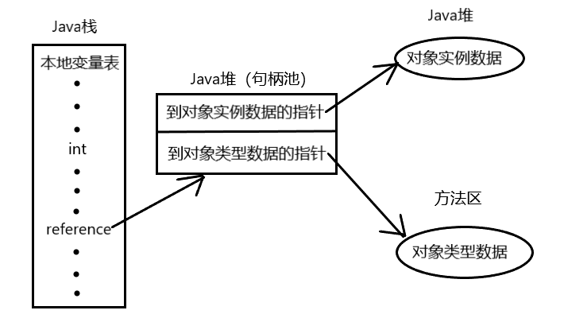
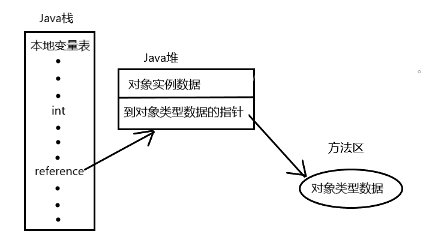
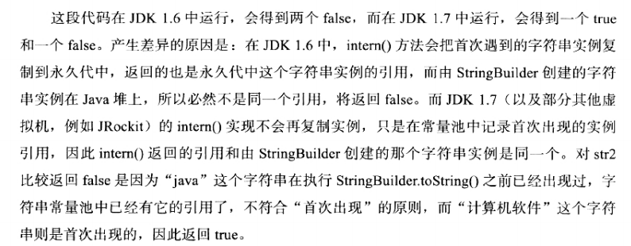

<!DOCTYPE HTML>
<html lang="">
<head><meta name="generator" content="Hexo 3.8.0">
    <!--Setting-->
    <meta charset="UTF-8">
    <meta name="viewport" content="width=device-width, user-scalable=no, initial-scale=1.0, maximum-scale=1.0, minimum-scale=1.0">
    <meta http-equiv="X-UA-Compatible" content="IE=Edge,chrome=1">
    <meta http-equiv="Cache-Control" content="no-siteapp">
    <meta http-equiv="Cache-Control" content="no-transform">
    <meta name="renderer" content="webkit|ie-comp|ie-stand">
    <meta name="apple-mobile-web-app-capable" content="杨柳潇的博客">
    <meta name="apple-mobile-web-app-status-bar-style" content="black">
    <meta name="format-detection" content="telephone=no,email=no,adress=no">
    <meta name="browsermode" content="application">
    <meta name="screen-orientation" content="portrait">
    <link rel="dns-prefetch" href="http://yangliuxiao.top">
    <!--SEO-->

    <meta name="keywords" content="Java,面试,JVM">


    <meta name="description" content="对象的创建
对象的内存分布
对象的访问定位
JVM堆栈溢出

对象的创建步骤： 类加载检查 —&gt; 分配内存 —&gt; 分配的内存空间初始化为零值 —&gt; 设置对象头 —&gt; 数据...">


<meta name="robots" content="all">
<meta name="google" content="all">
<meta name="googlebot" content="all">
<meta name="verify" content="all">

    <!--Title-->


<title>深入理解Java虚拟机（二） | 杨柳潇的博客</title>


    <link rel="alternate" href="/atom.xml" title="杨柳潇的博客" type="application/atom+xml">


    <link rel="icon" href="/favicon.jpg">

    


<link rel="stylesheet" href="/css/bootstrap.min.css?rev=3.3.7">
<link rel="stylesheet" href="/css/font-awesome.min.css?rev=4.5.0">
<link rel="stylesheet" href="/css/style.css?rev=@@hash">


    
	<div class="hide">
		<script type="text/javascript">
			var cnzz_protocol = (("https:" == document.location.protocol) ? " https://" : " http://");document.write(unescape("%3Cspan class='cnzz_stat_icon_1263868967 hide' %3E%3Cscript%20src%3D%22https%3A%2F%2Fs95.cnzz.com%2Fz_stat.php%3Fweb_id%3D1272564536%22%3E%3C%2Fscript%3E%3C/span%3E%3Cscript src='" + cnzz_protocol + "s19.cnzz.com/z_stat.php%3Fid%3D1263868967%26show%3Dpic1' type='text/javascript'%3E%3C/script%3E"));
		</script>
	</div>


    

</head>

</html>
<!--[if lte IE 8]>
<style>
    html{ font-size: 1em }
</style>
<![endif]-->
<!--[if lte IE 9]>
<div style="ie">你使用的浏览器版本过低，为了你更好的阅读体验，请更新浏览器的版本或者使用其他现代浏览器，比如Chrome、Firefox、Safari等。</div>
<![endif]-->

<body>
    <header class="main-header" style="background-image:url(/./img/background.jpg)">
    <div class="main-header-box">
        <a class="header-avatar" href="/" title="Mute">
            
        </a>
        <div class="branding">
        	<!--<h2 class="text-hide">Snippet主题,从未如此简单有趣</h2>-->
            
                 
            
    	</div>
    </div>
</header>
    <nav class="main-navigation">
    <div class="container">
        <div class="row">
            <div class="col-sm-12">
                <div class="navbar-header"><span class="nav-toggle-button collapsed pull-right" data-toggle="collapse" data-target="#main-menu" id="mnav">
                    <span class="sr-only"></span>
                        <i class="fa fa-bars"></i>
                    </span>
                    <a class="navbar-brand" href="http://yangliuxiao.top">杨柳潇的博客</a>
                </div>
                <div class="collapse navbar-collapse" id="main-menu">
                    <ul class="menu">
                        
                            <li role="presentation" class="text-center">
                                <a href="/"><i class="fa "></i>Home</a>
                            </li>
                        
                            <li role="presentation" class="text-center">
                                <a href="/archives/"><i class="fa "></i>时间轴</a>
                            </li>
                        
                    </ul>
                </div>
            </div>
        </div>
    </div>
</nav>
    <section class="content-wrap">
        <div class="container">
            <div class="row">
                <main class="col-md-8 main-content m-post">
                    <p id="process"></p>
<article class="post">
    <div class="post-head">
        <h1 id="深入理解Java虚拟机（二）">
            
	            深入理解Java虚拟机（二）
            
        </h1>
        <div class="post-meta">
    
        <span class="categories-meta fa-wrap">
            <i class="fa fa-folder-open-o"></i>
            <a class="category-link" href="/categories/JVM/">JVM</a>
        </span>
    

    
        <span class="fa-wrap">
            <i class="fa fa-tags"></i>
            <span class="tags-meta">
                
                    <a class="tag-link" href="/tags/JVM/">JVM</a> <a class="tag-link" href="/tags/Java/">Java</a> <a class="tag-link" href="/tags/面试/">面试</a>
                
            </span>
        </span>
    

    
        
        <span class="fa-wrap">
            <i class="fa fa-clock-o"></i>
            <span class="date-meta">2018/05/25</span>
        </span>
        
            <span class="fa-wrap">
                <i class="fa fa-eye"></i>
                <span id="busuanzi_value_page_pv"></span>
            </span>
        
    
</div>
            
            
    </div>
    
    <div class="post-body post-content">
        <p><a href="#对象的创建">对象的创建</a></p>
<p><a href="#对象的内存分布">对象的内存分布</a></p>
<p><a href="#对象的访问定位">对象的访问定位</a></p>
<p><a href="#JVM堆栈溢出">JVM堆栈溢出</a></p>
<hr>
<h4 id="对象的创建"><a href="#对象的创建" class="headerlink" title="对象的创建"></a>对象的创建</h4><p><strong>步骤</strong>： 类加载检查 —&gt; 分配内存 —&gt; 分配的内存空间初始化为零值 —&gt; 设置对象头 —&gt; 数据初始化</p>
<p> <strong>1. 类加载检查</strong></p>
<blockquote>
<p>虚拟机遇到一条new指令时，首先将去检查这个指令的参数是否能在常量池中定位到一个类的符号引用，并且<strong>检查这个符号引用代表的类</strong>是否已被加载、解析、初始化过。若没有，那必须先执行相应的<strong>类加载</strong>过程。</p>
</blockquote>
<p> <strong>2. 分配内存</strong></p>
<blockquote>
<p>在类加载检查通过后，接下来虚拟机将<strong>为新生对象分配内存</strong>。选择哪种分配方式由<strong>Java堆是否规整</strong>决定，而Java堆是否规整又由<strong>所采用的垃圾收集器是否带有压缩整理功能</strong>决定。</p>
<ul>
<li>内存分配方式</li>
</ul>
<blockquote>
<p>① “<strong>指针碰撞</strong>” ：内存绝对规整，即用过的内存放在一边，空闲内存放在一边，分配内存即把作为分界点的指针向空闲方向挪动与对象大小相等的距离即可。</p>
<p>② “<strong>空闲列表</strong>”： 内存不规整，已占用的内存和空闲内存交错，VM需维护一个列表，记录可用内存，分配时从内存列表找一块足够大的内存空间。</p>
</blockquote>
</blockquote>
<p> <strong>3. 分配的内存空间初始化为零值</strong></p>
<blockquote>
<p>内存分配完成后，虚拟机需将分配到的内存空间都<strong>初始化为零值</strong>（<strong>不包括对象头</strong>）——<strong>保证了对象的实例字段在Java代码中可以不赋初始值就可以直接使用</strong></p>
</blockquote>
<p> <strong>4. 设置对象头</strong></p>
<blockquote>
<p>VM对对象头中的信息进行必要的设置，例如<strong>这个对象是哪个类的实例、如何找到类的元数据信息、对象的哈希码、对象的GC分代年龄等</strong>。</p>
</blockquote>
<p> <strong>5. 数据初始化</strong></p>
<blockquote>
<p>执行new指令<strong>之后</strong>会接着执行<strong>&lt; init &gt;方法</strong>，把对象按照程序员的意愿进行初始化。</p>
</blockquote>
<hr>
<h4 id="对象的内存分布"><a href="#对象的内存分布" class="headerlink" title="对象的内存分布"></a>对象的内存分布</h4><p>对象在内存中的布局可以分为<strong>3块区域</strong>：①对象头（Head）②实例数据（Instance Data）③对齐填充（Padding）</p>
<p> <strong>1. 对象头</strong>：包括两个部分：</p>
<blockquote>
<p>①对象自身的<strong>运行时数据</strong>：哈希码、GC分代年龄、锁状态标志、线程执有的锁、偏向线程ID、偏向时间戳等。</p>
<p>②<strong>类型指针（不一定有）</strong>：即对象指向它的类元数据的指针。VM通过这个指针来确定这个对象是哪个类的实例。</p>
</blockquote>
<p> <strong>2. 实例数据</strong>：对象<strong>真正存储的有效信息</strong></p>
<blockquote>
<ul>
<li><p>HotSpot VM 默认的<strong>分配策略顺序</strong>为long/double、int、short/char、byte/boolean、OOPs（Ordinary Object Points）</p>
</li>
<li><p>父类中定义的变量在子类之前</p>
</li>
<li><p>若CompactField参数为true，则子类中的较短变量也可能插入到父类变量空隙中。</p>
</li>
</ul>
</blockquote>
<p> <strong>3. 对齐填充</strong>：<strong>不一定存在</strong>，起占位符作用</p>
<blockquote>
<p>由于HotSpot VM的自动内存管理系统要求对象起始地址须是8字节的整数倍，所以需要对齐填充区域补全。</p>
</blockquote>
<hr>
<h4 id="对象的访问定位"><a href="#对象的访问定位" class="headerlink" title="对象的访问定位"></a>对象的访问定位</h4><p>Java程序通过<strong>栈上的reference数据</strong>来操作<strong>堆上的具体对象</strong>。</p>
<p>由于reference类型在Java VM规范中只规定了一个指向对象的引用，并<strong>没有定义这个引用定位、访问堆中对象的方式</strong>，所以具体的对象访问方式也取决于虚拟机实现而定。</p>
<p> <strong>1. 使用句柄访问</strong></p>
<blockquote>
<p>Java堆中将会划分出一块内存来作为句柄池。</p>
<p>reference数据中存储的就是对象的句柄地址，而句柄中包含了对象实例数据和类型数据各自的地址。</p>
<p><strong>优点：</strong>reference中存储的是稳定的句柄地址，在对象被移动时，只改变句柄中的实例指针，不改变reference.</p>
<p></p>
</blockquote>
<p> <strong>2. 使用直接指针访问（HotSopt采用）</strong></p>
<blockquote>
<p>reference中存储的直接就是对象地址。</p>
<p>而Java堆对象的布局中必须考虑<strong>如何放置访问类型数据的相关信息</strong>。</p>
<p><strong>优点：</strong>速度更快，节省了一次指针定位的时间开销。</p>
<p></p>
</blockquote>
<hr>
<h4 id="JVM堆栈溢出"><a href="#JVM堆栈溢出" class="headerlink" title="JVM堆栈溢出"></a>JVM堆栈溢出</h4><p> <strong>1. Java堆溢出</strong>——OutOfMemoryError</p>
<p><strong>方法</strong>：不断创建对象，并保证GC Roots到对象之间有可达路径，以避免垃圾回收。</p>
<p>虚拟机参数： —Xms：堆的最小值  —Xmx：堆的最大值</p>
<p> <strong>2. 虚拟机栈和本地方法栈溢出</strong></p>
<p>①线程请求的栈深度大于虚拟机所允许的最大深度，抛<strong>StackOverFlowError</strong>.</p>
<p>②虚拟机扩展栈时无法申请到足够的内存空间，抛<strong>OutOfMemoryError</strong>.</p>
<p><strong>方法</strong>：</p>
<blockquote>
<ol>
<li><p>减少栈容量</p>
</li>
<li><p>定义大量本地变量</p>
</li>
<li><p>建立多线程，为每个线程申请栈区</p>
</li>
</ol>
</blockquote>
<p>虚拟机参数： —Xss：栈的最小值   —Xsx：栈的最大值</p>
<p><strong>3. 方法区和运行时常量池溢出</strong></p>
<p>方法区：产生大量的类</p>
<p>运行时常量池：向常量池添加大量常量（<strong>String.intern()</strong>）</p>
<ul>
<li><strong>关于String.intern()方法</strong>：是一个Native方法，作用是如果字符串常量池中已经包含一个等于此String对象的字符串，则返回代表池中这个字符串的String对象。否则，将此对象包含的字符串添加到常量池中，并返回引用。</li>
</ul>
<figure class="highlight java"><table><tr><td class="gutter"><pre><span class="line">1</span><br><span class="line">2</span><br><span class="line">3</span><br><span class="line">4</span><br><span class="line">5</span><br><span class="line">6</span><br><span class="line">7</span><br><span class="line">8</span><br><span class="line">9</span><br><span class="line">10</span><br><span class="line">11</span><br><span class="line">12</span><br></pre></td><td class="code"><pre><span class="line"><span class="keyword">public</span> <span class="class"><span class="keyword">class</span> <span class="title">RuntimeConstantPoolOOM</span></span>&#123;</span><br><span class="line"></span><br><span class="line">    <span class="function"><span class="keyword">public</span> <span class="keyword">static</span> <span class="keyword">void</span> <span class="title">main</span><span class="params">(String[] args)</span></span>&#123;</span><br><span class="line">            <span class="function"><span class="keyword">public</span> <span class="keyword">static</span> <span class="keyword">void</span> <span class="title">main</span><span class="params">(String[] args)</span></span>&#123;</span><br><span class="line">                String str1 = <span class="keyword">new</span> StringBuilder(<span class="string">"计算机"</span>).append(<span class="string">"软件"</span>).toString();</span><br><span class="line">                System.out.println(str1.intern() == str1);</span><br><span class="line"></span><br><span class="line">                String str2 = <span class="keyword">new</span> StringBuilder(<span class="string">"ja"</span>).append(<span class="string">"va"</span>).toString();</span><br><span class="line">                Ststem.out.println(str2.intern() == str2);</span><br><span class="line">            &#125;</span><br><span class="line">    &#125;</span><br><span class="line">&#125;</span><br></pre></td></tr></table></figure>
<p></p>

    </div>
    
    <div class="post-footer">
        <div>
            
        </div>
        <div>
            
        </div>
    </div>
</article>

<div class="article-nav prev-next-wrap clearfix">
    
        <a href="/2018/05/25/深入理解Java虚拟机（三）/" class="pre-post btn btn-default" title="深入理解Java虚拟机（三）">
            <i class="fa fa-angle-left fa-fw"></i><span class="hidden-lg">上一篇</span>
            <span class="hidden-xs">深入理解Java虚拟机（三）</span>
        </a>
    
    
        <a href="/2018/05/25/深入理解Java虚拟机（一）/" class="next-post btn btn-default" title="深入理解Java虚拟机（一）">
            <span class="hidden-lg">下一篇</span>
            <span class="hidden-xs">深入理解Java虚拟机（一）</span><i class="fa fa-angle-right fa-fw"></i>
        </a>
    
</div>


                </main>
                
                    <aside id="article-toc" role="navigation" class="col-md-4">
    <div class="widget">
        <h3 class="title">Table of Contents</h3>
        
            <ol class="toc"><li class="toc-item toc-level-4"><a class="toc-link" href="#对象的创建"><span class="toc-text">对象的创建</span></a></li><li class="toc-item toc-level-4"><a class="toc-link" href="#对象的内存分布"><span class="toc-text">对象的内存分布</span></a></li><li class="toc-item toc-level-4"><a class="toc-link" href="#对象的访问定位"><span class="toc-text">对象的访问定位</span></a></li><li class="toc-item toc-level-4"><a class="toc-link" href="#JVM堆栈溢出"><span class="toc-text">JVM堆栈溢出</span></a></li></ol>
        
    </div>
</aside>

                
            </div>
        </div>
    </section>
    <footer class="main-footer">
    <div class="container">
        <div class="row">
        </div>
    </div>
</footer>

<a id="back-to-top" class="icon-btn hide">
	<i class="fa fa-chevron-up"></i>
</a>


    <div class="copyright">
    <div class="container">
        <div class="row">
            <div class="col-sm-12">
                <div class="busuanzi">
    
        Total:
        <strong id="busuanzi_value_site_pv">
            <i class="fa fa-spinner fa-spin"></i>
        </strong>
        &nbsp; | &nbsp;
        Visitors:
        <strong id="busuanzi_value_site_uv">
            <i class="fa fa-spinner fa-spin"></i>
        </strong>
    
</div>

            </div>
            <div class="col-sm-12">
                <span>Copyright &copy; 2017
                </span> |
                <span>
                    Powered by <a href="//hexo.io" class="copyright-links" target="_blank" rel="nofollow">Hexo</a>
                </span> |
                <span>
                    Theme by <a href="//github.com/shenliyang/hexo-theme-snippet.git" class="copyright-links" target="_blank" rel="nofollow">Snippet</a>
                </span>
            </div>
        </div>
    </div>
</div>


    <script async src="//busuanzi.ibruce.info/busuanzi/2.3/busuanzi.pure.mini.js"></script>


<script src="/js/app.js?rev=@@hash"></script>

</body>
</html>